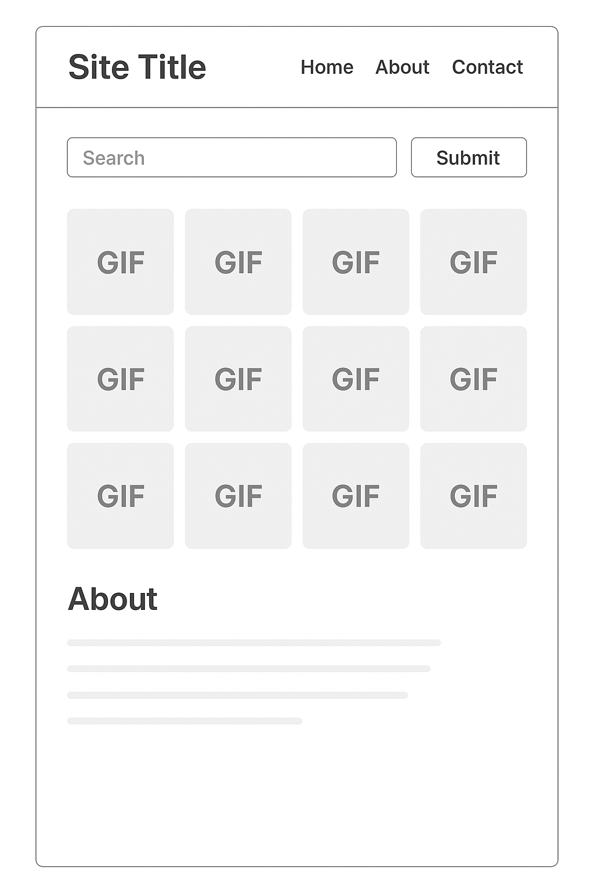

Lizardfy 🦎
Overview
Lizardfy is a custom-built search engine that uses the Giphy API to fetch and display lizard-themed GIFs (and beyond). The project was created as part of a Software Engineering Bootcamp to practice building a fully functional frontend web app with HTML, SCSS, and JavaScript, while integrating an external API.
- Enter a search term
- Fetch GIFs dynamically from the Giphy API
- View results in a responsive card-based layout
- Navigate between Home, About, and Contact pages
Live Demo
GitHub Pages: https://lruizrodr.github.io/Project_2/
User Stories
- As a user, I want to search GIFs by keyword, so I can explore lizard-related content.
- As a user, I want the site to be responsive, so I can use it on both mobile and desktop.
- As a user, I want an intuitive layout with navigation, so I can easily move between Home, About, and Contact pages.
- As a developer, I want my SCSS organized and maintainable, so I can scale the project easily.
Wireframe
Below is the initial wireframe designed for the project:

Features
- 🔍 Search Functionality – fetch GIFs from Giphy by keyword
- 📱 Responsive Layout – optimized for both desktop and mobile
- 🎨 SCSS Styling – clean, modular, and organized styles
- 🗂️ Multi-page Navigation – Home, About, and Contact pages
- ⚡ Dynamic Rendering – results update instantly without reloading
Technologies Used
- HTML5 – semantic markup
- SCSS (compiled to CSS) – structured styling, responsive design
- JavaScript (ES6) – async/await, DOM manipulation, API integration
- Giphy API – powering the search engine results
How to Use
- Open the site in your browser.
- Type a keyword in the search bar (e.g., “lizard”, “funny”, “dragon”).
- Click Search to see GIFs appear instantly.
- Use the Load More button (if included) to fetch additional results.
- Navigate to About to read project details or Contact for info.
Installation & Setup (For Developers)
- Clone the repository:
git clone https://github.com/yourusername/your-repo-name.git- Navigate into the project folder:
cd your-repo-name- Open
index.htmlin your browser.
(Optional) If you want to modify styles, install Sass and watch SCSS:
npm install -g sass
sass --watch SCSS:CSSProject Structure
├── CSS/
│ ├── styles.css # Compiled stylesheet
│ ├── styles.css.map # Source map for debugging SCSS
│ ├── styles.scss # Main SCSS source file
│ └── Wireframe1.png # Wireframe image for documentation
│
├── about.html # About page (user stories, wireframe showcase)
├── contact.html # Contact page
├── index.html # Homepage (search engine)
├── index.js # JavaScript logic (API calls, DOM updates)
└── readme.md # Project documentationFuture Improvements
- ⭐ Favorite GIFs – allow users to save and revisit their favorite GIFs.
- 📂 Categories/Filters – add buttons for quick searches (e.g., trending, funny, cute).
- 🌙 Light Mode Toggle – user-controlled theme switching.
- 🔄 Infinite Scroll – auto-load more GIFs as the user scrolls.
- 🔒 User Accounts – optional login to save searches across devices.
Author
👤 Luis Ruiz
SE Bootcamp – Project 2
License
This project does not currently have a license. All rights reserved.